Each player takes on a lord with a power of their own. Every turn, you collect your income, recruit units, move your troops and build. There are three ways to win. A player who attacks with no diplomacy left becomes a tyrant, and everyone else can then attack them for free.
3 to 6players
7territories per player on the map
10lords with distinct powers
94unit cards in the deck
Freeno account needed
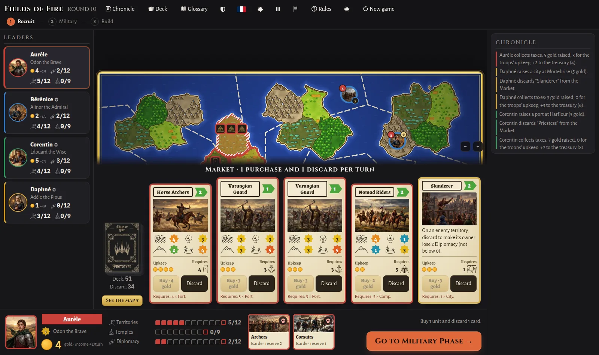
A four-lord game, running in the browser.
Winning the game
There are three ways to win: military, religious or diplomatic. The first player to reach their threshold wins straight away.
Threshold by player count
3
4
5
6
Military victory
Hold enough territories.
Your lord claims neutral territories. To take other players’ territories, you attack with elite units, and every assault costs diplomacy. An enemy building has to be pacified before it comes under your control.
with 3 players 11
with 4 players 12
with 5 players 13
with 6 players 14
Religious victory
Hold enough temples.
A temple costs 7 gold and takes up a slot. It brings in nothing by itself, but it lets you recruit certain units, and whoever destroys it loses diplomacy.
with 3 players 8
with 4 players 9
with 5 players 10
with 6 players 11
Diplomatic victory
Reach 12 diplomacy.
Diplomacy comes mostly from special units. An embassy in your capital strengthens the effect of some cards. Other cards ask you to deter the other players from attacking you.
with 3 players 12
with 4 players 12
with 5 players 12
with 6 players 12
These thresholds are still changing: we adjust them after each playtest.
How a turn plays out
Collect
You receive 1 gold per territory and 1 more per city, plus what some special units bring in. Your units’ pay is then taken off.
Recruit
Five cards are laid face up, the same for every player. You may buy one and discard one, in whichever order you like.
Military
You move your pieces, claim a neutral territory, attack, pacify and use your units’ powers.
Build
Your capital has three slots, other territories two. You can build camps, forts, ports, cities, temples and the embassy. A territory cannot hold the same building twice, except camps, and a building can be replaced by another.
The map
You play on a randomly drawn map or on a historical one. There are four terrains (plains, forest, mountains, marsh), and an elite unit’s strength depends on the terrain.
A random map has one or two more islands than there are players, and two capitals are always at least three spaces apart. The historical map shows the English Channel.
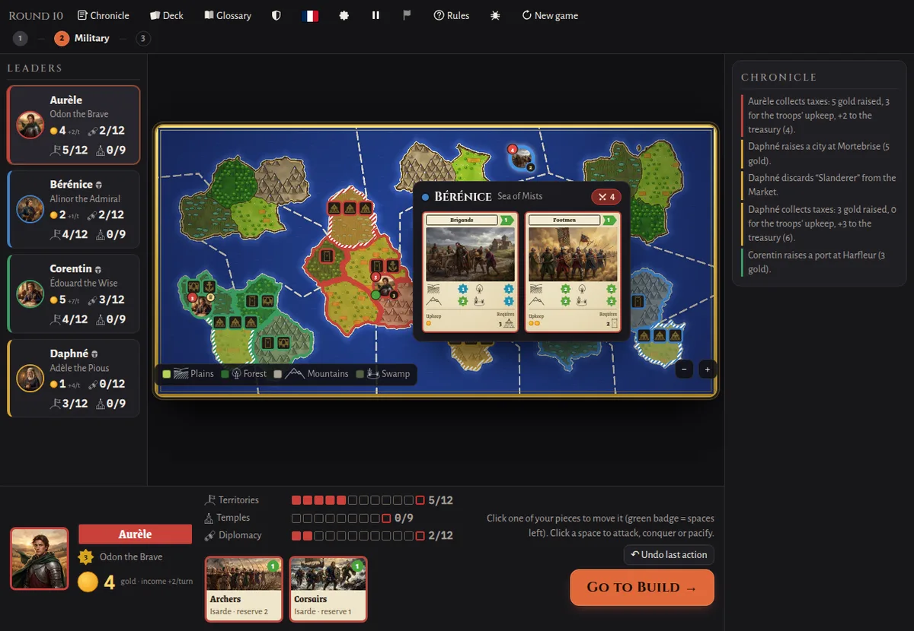
Crossing the sea
The sea is divided into zones. Each zone borders four territories at most.
You cannot walk across the sea: you have to set out from a port, except for a few units that do without one.
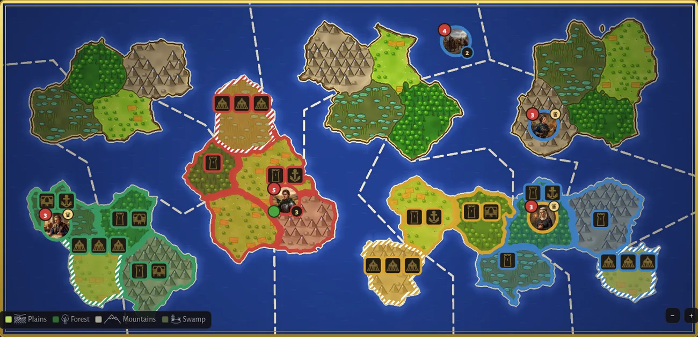
Illumination style
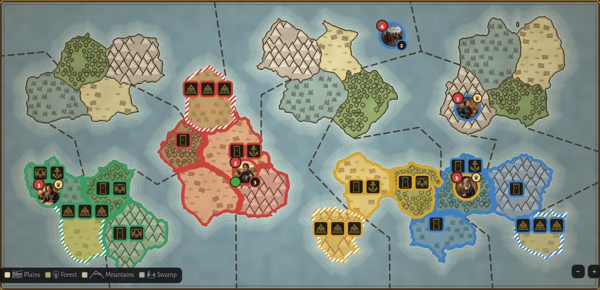
Old map style
The market
Five cards are on show, and every player buys from the same market. Each turn, you may buy one and discard one. Elite units fight, and their strength depends on the terrain. Special units do not fight: they convert a temple, carry a message to a foreign court, scout the map or raze a building. To recruit a card, you need the building it asks for, then you pay its upkeep at each collection. Because the market is shared, a discard can also deprive an opponent of the card they were waiting for. You can look through the deck and the discard pile during the game.
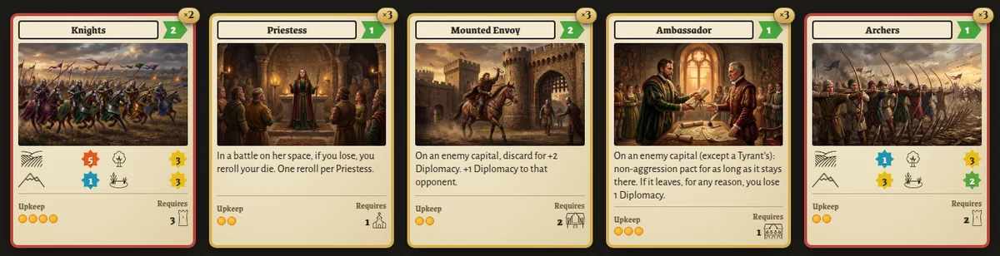
A few cards from the deck. The border gives the type (yellow: special, red: elite) and the number in the green frame, the movement speed. Bottom left, the upkeep; bottom right, the building required; top right, the number of copies.
Lords
Your lord is a piece apart. It is the only one that can claim a neutral territory, and its power often shapes your whole game. If it loses a fight, you give up one more territory.
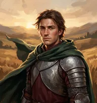
Odon the Brave
Each of his elite units in an assault gives him +1, whether or not he leads it.
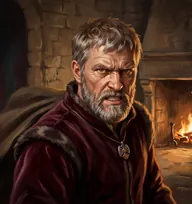
Gustave the Irascible
All his territories: +1 defence. His cities cost 6 gold.
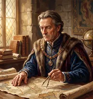
Edward the Wise
Once per game, in peacetime, with 5 diplomacy or less: 1 gold for 1 diplomacy point.
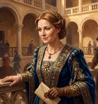
Mathilda the Beloved
Her first city costs 4 gold.
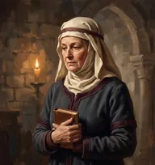
Adele the Pious
Her temples cost 6 gold and give +1 defence.
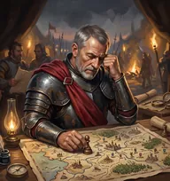
Henry the Strategist
All his elite units move one tile further.
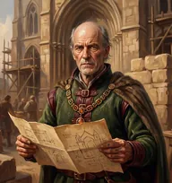
Hugh the Builder
His forts and ports cost 1 gold less.
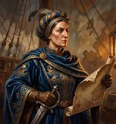
Alinor the Admiral
Her ports cost 2 gold and have +2 defence.
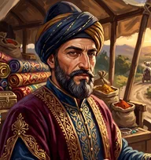
Yusuf the Merchant
Once per game, he can buy 3 cards from the market.
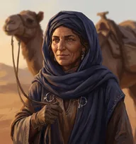
Zaynab the Wanderer
All her special units move one tile further.
Diplomacy
Diplomacy is a victory condition, and you also spend it on war. Each assault costs 1 point, plus 1 for each enemy special unit destroyed. An envoy sent to a foreign capital earns its master 2 points and the player who receives it 1. An ambassador posted with a rival seals a non-aggression pact, and the other player pays dearly if they break it. A slanderer makes its target lose diplomacy.
Out of diplomacy
A player who launches an assault with no diplomacy left becomes a Tyrant.
No diplomatic victory
A Tyrant never gains diplomacy again. They can now only win by arms or by temples.
A target for all
Attacking a Tyrant or destroying their temples costs nothing. Every turn, one of their territories revolts, and they can never take it back.
Play the prototype
The game opens straight in your browser, free and without an account. We record each game anonymously (length, number of rounds, lords, victory type) to balance the game.
An online game can stay paused for 48 hours and resume with the same code. The game is in English and French. During other players’ turns, seven mini-games (solitaire, minesweeper, sliding puzzle…) help pass the time.
Your feedback
Fields of Fire is still a prototype, and your feedback helps us tune it. You can write to us here, or report a bug during a game with the insect-shaped button.